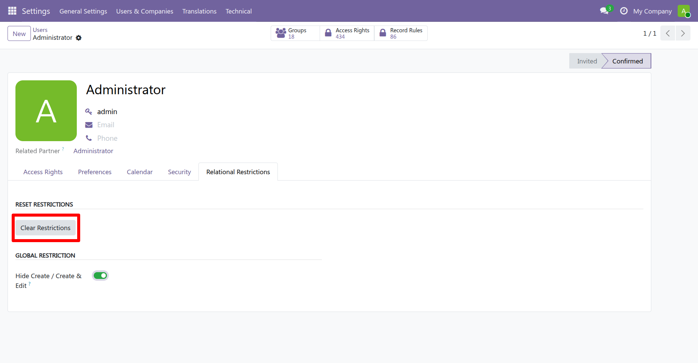
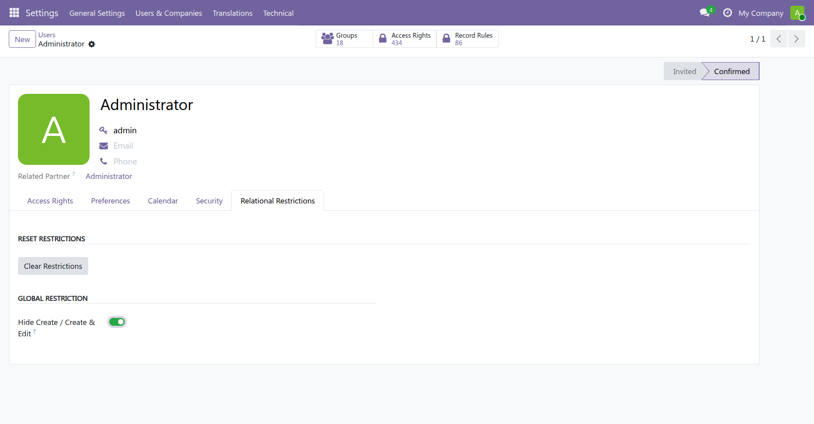

Module Demo Video
▶ Click Here to Watch Demo Video
Screenshots

Reset Restrictions Button
Global Restriction
Model-wise Restriction

This module allows administrators to restrict the creation of records from relational fields such as Many2one and Many2many. You can apply a global restriction for a user or restrict only specific models as needed.
Go to:
Settings → Users → Relational Restrictions
▶ Click Here to Watch Demo Video
For assistance, customization, or feedback:
Developer: Dynamic TechnoLabs